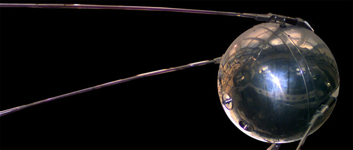

Lancement du premier satellite artificiel
Le 4 octobre 1957, l'URSS met en orbite le premier satellite artificiel de l'histoire, Spoutnik 1 (d'un mot russe qui signifie « compagnon de voyage »). L'engin, d'un diamètre de 60 cm et d'un poids de 83,6 kilos, est mis en orbite par une fusée à une altitude de 900 km. Il accomplit une révolution de la Terre en 96 minutes. Son « bip-bip » va devenir vite familier à tous les hommes. Le 3 novembre suivant, les Soviétiques récidivent avec Spoutnik 2. Cette fois, l'engin amène dans l'espace une chienne nommée Laïka (elle mourra au cours du voyage).
Le défi soviétique
Cette performance trouve son origine dans la rafle de savants allemands qui travaillaient sur les fusées V2 de Hitler et sont entrés bon gré mal gré au service des vainqueurs.
Le lancement de Spoutnik survient en pleine guerre froide et après la sauvage répression par les Soviétiques d'un soulèvement en Hongrie. Plusieurs journalistes américains comparent la mise en orbite du satellite à l'attaque surprise des Japonais contre Pearl Harbor en 1941. Le petit satellite prouve que l'Amérique n'est plus une forteresse géographique et les citoyens des États-Unis prennent conscience qu'ils ne sont plus à l'abri d'une attaque par des missiles nucléaires.
C'est ainsi que Spoutnik 1 déclenche la course à l'espace. Elle va se poursuivre avec le triomphe de Youri Gagarine et s'achever par le petit pas de Neil Armstrong sur la lune.
Plan du site | Contact | Site réalisé par Mathieu Morainville.